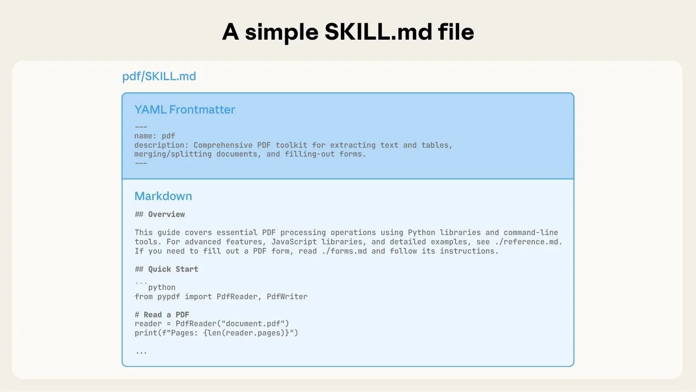

skill
简介¶
2025年12月18日，Anthropic 正式推出了 Agent Skills 的开放标准：https://docs.anthropic.com/agent-skills
智能体拥有智能和能力，但不一定具备有效处理实际工作的专业知识（通用知识很强，专项操作能力很弱）。这促使Claude创建了Agent Skills。Skills是有组织文件的集合，将领域专业知识——工作流程、最佳实践、脚本——打包成智能体可以访问和应用的格式。
阻碍人们使用 AI 的主要障碍，并非模型的能力不足，也非 Agent 的智能水平不够，由于处理任务时往往涉及大量杂乱的上下文，要让 AI 高效工作，就不可避免地需要向它提供这些信息。与其一点点地指导 AI，许多人觉得不如自己动手来得快。假设业界的 AI 能力有 80 分，而你的任务实际上只需要 20 分的能力就足够了。但因为你懒，或者使用姿势不对，最后反而逼得 AI 不得不去猜测、去凭经验、去漫无目的地查询海量信息。结果，你需要一个 120 分的 AI 才能满足需求。
- 1 消费端。Skill 本质上就是一份打包好的“工具说明书”。它的优势主要在于，你不用每次都显式地重复说明，而且通过“渐进式加载”还能节省一些 Token。
- 2 生产端。支持 Skill 的 Agent 都内置了一个最重要的元 Skill：skill-creator，它能帮你自动生成 Skill。只要你有一点点耐心，能够完整地带着 AI 完成一次全过程——哪怕就一次，就一次！——那么在结束时，你就可以让 AI 为这个场景生成一个 Skill。从此以后，你就解放了。
提示词演进脉络：普通提示词 ==> 结构化提示词 ==> Skill
从哲学中的“意向性”开始¶
Skill 不是 Prompt——从意向性到工程注入的范式转移
赛尔（John Searle）将意向性区分为两类：
- 1 原初意向性（Original Intentionality）：指一种内在的、与生俱来的指向性或“关于性”（aboutness）。它是生物心智自然产生的功能，不需要依赖外部观察者的解释就能获得意义。
- 2 衍生意向性（Derived Intentionality）：指一种被赋予的、借来的指向性。物体本身没有任何意义，它的意义完全来自于拥有“原初意向性”的心智（也就是人）对其进行的解释或定义。 人类拥有的是前者。我们的信念、欲望、恐惧、目标，根植于生物体、进化压力和生存需求，是不可外包的。AI 拥有的，只可能是后者。而衍生意向性的本质，不是“涌现”，而是注入。这不是修辞，也不是隐喻，而是一个工程事实。AI 的信念、目标、偏好、工作方式，并不是它“自己想出来的”，而是人类通过：
- 3 训练语料
- 4 对话上下文
- 5 文档
- 6 代码
- 7 工具调用约定 一点点灌进去的。停止注入，意向就消失。模型不会感到无聊，不会密谋反叛，也不会“暗中计划”。它只会停止计算，退化为一堆静态参数。
Prompt Engineering 曾短暂成为一项“技能”，对于理解语言、理解人性、理解模型行为的人来说，通过套话、诱导、结构化表达，可以在一定程度上“控制”模型输出。本质上，这是用人类的高阶意向性理解能力，去操纵一个尚不具备欺骗能力的统计系统。问题在于： 这种方式门槛极高，并且每次都要从零开始。单次注入不难，难的是持续注入：换一个对话窗口，AI 就失忆； 换一个任务场景，偏好全部作废；每次都要重新解释“不要这样”“请那样”。谁能让注入一次、反复生效，谁就掌握了真正的杠杆。注入门槛 × 持续性 = 产品与生态的分水岭。
上下文窗口是意向容器，工具链是意向注入脚手架。Skill 的本质：意向模式的固化。Prompt 是单次意图表达。A Skill is a markdown file that teaches Claude how to do something specific. 当你每次抱怨”别给我TODO、别自作聪明优化”，其背后都是一个潜在的Skill。Skill是操作性知识的固化，为了消除重复，是对操作者行为习惯的持续萃取。PS：之前总是对比agent/mcp
一个完整的 Skill，至少包含四类信息：
- 1 信念：什么是“好”的结果
- 2 标准：如何判断对错
- 3 流程：你通常如何一步步完成
- 4 偏好：格式、风格、禁忌 这些合在一起，不是答案，而是工作方式本身。Prompt 是一句话，Skill 是一部分你自己。Skill不能单独看，要和Prompt、MCP、Command、Hook一起看。编码中的快捷操作，多了、稳定了，就变成工作流；工作流固化下来，就是Skill；Skill足够复杂、能自动处理一连串任务时，就变成Agent。Skill足够复杂、能自动处理一连串任务时，就变成Agent。
从目前来看，skill已经初步具备了，稳定可验证，复用可迁移的特性，作为作者：你把自己的工作方式注入给 AI，作为使用者：你调用别人已经注入过的方式。AI 的边界，不再由模型决定，而由人类愿意注入什么、又是否愿意承担后果来决定。
与已有组件对比¶
skill的诞生是Anthropic 对于claude code在演进的过程中，淘汰了All-in-one的加载所有tools，采用了定义skills来渐进式加载提示词以减少上下文压力和幻觉现象的手段。
- 1 与agent对比，当我们一般说agent时，一般会提到loop（当然，workflow agent不是个loop），agent一般对目标负责（虽然很多时候能力不够导致效果不佳），部分场景是long-running/Long-horizon的，有时要维护状态（比如反问），业界最近在提Ralph Loop。从这个视角看，skill粒度是小于agent的，不大可能long-running 和有状态。此外，skill 只是一个静态的规范，与agent相同点是运行时仍需要llm驱动。
- 2 与mcp对比，在Claude Code中，Skills是提供Knowledge的（用 Markdown 教 AI 做事），而不是用于提供工具的。如果你想在Claude Code的system tools之外，额外给它配置一些其他的工具，那么似乎还是只能依赖MCP。实际上，Skills能做的事更多，你可以在里面配置流程、编码规范、业务知识、代码示例、各种规则等等，以及对于现有工具的调用指导，你都可以在Skills中描述。但是，引入新的工具还是得通过MCP。
- 3 MCP解决了工具集成的问题后，又出现了另一个问题。很多任务需要特定的执行顺序、规则和约束，但把这些步骤全部写成代码又不太现实。如何在尽可能的准确的前提下，能让用户能用文字（而非代码）指导模型按照特定的流程和规则执行任务？这就是Skills产生的原因，提供一个方式，让用户可以用文字定义指令、脚本和资源，形成可复用的任务流程。Agent将决策权完全下放给了 Agent 和 Prompt，能够解决原有写程序不能解决的问题——比如处理不确定性、动态调整策略、理解自然语言意图等。
- 4 MCP解决与既有系统的接驳问题，还有curl、bash等其它接驳方式，skill 使用命令行脚本或curl远程调用，在这个基础上，Skills还能支持更复杂的流程定义——通过SKILL.md文档告知LLM如何组合多个接口调用，所以长流程任务的成功率会更高。从这个视角mcp 与skill 是竞争关系。PS: skill是工具与提示词结合的典范。
- 5 工具和 Skill 的区别在于工具是框架提供的，而 Skill 仅是文本，前者框架完成就已经固定（需要严格的、机器可读的Schema Definition），后者 AI 可以自己理解（LLM In-Context Learning能力已经很强）、创建、修改。甚至有观点认为Skill最大的价值是Agent可以自己生成Skill
Claude Skills¶
利用文件和文件夹构建专业智能体的新方式：Skill就是一个标准化的文件夹，用来打包Agent完成特定任务所需的知识、工作流和工具。可以把它理解成给模型的说明书或标准作业程序（SOP，或者之前比较火的概念：SPEC的增强版）。
- SKILL.md, 核心文件，必须存在。告诉Claude在什么情况下、以及如何使用这个Skill。
- YAML Frontmatter (元数据区)：里面用YAML写元数据（name和description）
- Markdown Body (指令区)：用Markdown 详细说明了执行该任务的工作流程 (Workflow)、最佳实践、注意事项，以及如何调用 scripts 和 references 目录下的资源。

- scripts/：存放可执行的Python、Shell脚本。
- references/：存放参考文档。比如API文档、数据库Schema、公司政策等，这些是给Claude看的知识库。
- assets/：存放资源文件。比如PPT模板、公司Logo、React项目脚手架等，这些是Claude在执行任务时直接使用的文件，而不是阅读的。 它把完成一个特定任务所需的一切都打包好了，本质上就是一种代码和资源的组织方式，一种约定优于配置的理念。当你的Agent能力越来越多时，怎么管理？一个几千行的System Prompt？一个包含几十个工具函数的大杂烩文件？这些都很难维护。而Skills提供了一种解耦的、模块化的方案（可组合性、可扩展性和可移植性）。你团队里的Agent不再是依赖一个巨大的、难以维护的system_prompt.txt，而是一个由几十个标准化的Skill文件夹组成的能力库，每个Skill都可以独立版本控制、测试和迭代。
“Agent Skills” 更是一种架构思想和工程实践，其核心思路在所有主流 LLM 平台上都是通用的：
- 发现（Discovery）：Agent 如何知道“技能”的存在
- 加载（Loading）：Agent 如何在需要时获取技能的详细信息（即“渐进式披露”）
- 执行（Execution）：Agent 如何运行代码或调用 API
发现与加载¶
渐进式披露(Progressive Disclosure)，让Agent可以访问大量技能，但不会一次性“灌输式”教学，而是“按需加载”。“渐进式”的方式。
技能发现。会话开始时从SKILL.md文件的元数据区域加载名称与描述，用于发现技能。具体来说就是把name和description注入系统Prompt。 技能理解。当LLM识别需要使用某个Skill时，会加载该技能的完整SKILL.md，以了解真正的技能指南。 资源按需加载。在使用技能时，如果发现有额外的动态资源需要读取（文档、模板、脚本等），则按需加载对应资源。 渐进式披露三层结构： 先元数据，再正文，再资源。
一些实践¶
工程落地-定义技能元工具 (skill meta tools)：list_skill/get_skill/run_skill，在 system prompt 里强调这 3 个 tools
1 2 | |
驱动skill的agent¶
skill 不只是静态文件，涉及到agent 范式的调整：multi-agent ==> 单agent+skills，从始至终，与用户交互的只有一个 Agent。这意味着从需求讨论到最终生成实现计划，所有的对话、决策和中间产物都保留在同一个会话的上下文中。这需要一些配套措施
- 压缩
- sub-agent 长耗时任务外包
- 渐进披露
为了在长对话中兼顾连续性与效率，需在流程的关键节点引入了”微压缩”机制。压缩策略：
- 工具调用日志，折叠为调用类型+文件路径+关键发现。
- 大段文件内容，提取摘要，文件名+核心内容。
- 用户对话，完整保留所有原始内容。
- agent决策，完整保留所有推理过程和结论。
- 产出文档，折叠为文档路径。 PS： 反问的实现也相对更简单。如果一个问题，都是预期10个工具可以解决，那单agent+skills 就走的通。